Laravel UI Bootstrap dan Templating
Ringkasan laporan praktikum tentang penerapan Laravel UI dengan Bootstrap untuk autentikasi, integrasi template SB Admin 2, dan manajemen pengguna berbasis CRUD.
-
Pendahuluan
Laravel merupakan salah satu framework PHP yang banyak digunakan untuk mengembangkan aplikasi web secara cepat, terstruktur, efisien, dan modern. Laravel menerapkan arsitektur MVC (Model-View-Controller) sebagai proses pengelolaan data, logika aplikasi, dan tampilan pengguna. Selain itu, Laravel adalah framework berbasis package yang mendukung proses pengembangan, termasuk fitur autentikasi secara otomatis.
Pada praktikum ini, mahasiswa mempelajari pengelolaan halaman data autentikasi (login dan register) yang dibangun menggunakan package Laravel UI berbasis framework CSS Bootstrap. Selain itu dilakukan juga proses pengelolaan tabel database melalui penggunaan fitur migration untuk membentuk struktur tabel dan admin default secara otomatis.
Selain pengelolaan basis data dan autentikasi, fokus utama lainnya dalam praktikum ini adalah templating atau penyusunan tata letak (layout) aplikasi. Mahasiswa mempelajari penggunaan template eksternal, yaitu SB Admin 2, ke dalam project Laravel untuk membangun antarmuka komponen halaman web menjadi bagian-bagian kecil seperti sidebar, topbar, dan konten utama agar kode lebih modular dan mudah dikelola.
Di akhir praktikum, mahasiswa mengimplementasikan konsep CRUD (Create, Read, Update, Delete) pada pengelolaan pengguna (users). Implementasi ini memanfaatkan Resource Controller dan diperkaya dengan penggunaan plugin DataTables pada bagian view untuk mempermudah proses pencarian (search) dan paginasi (pagination) data. Dengan pendekatan ini, mahasiswa mendapatkan gambaran yang menyeluruh mengenai pengelolaan dan pembangunan fitur web.
-
Tujuan
- Mahasiswa mampu mengimplementasikan sistem autentikasi pengguna (login dan register) serta pengelolaan basis data menggunakan migration dan seeding pada framework Laravel.
- Mahasiswa mampu mengimplementasikan template desain eksternal (SB Admin 2) ke dalam project Laravel dengan pendekatan templating yang modular dan responsif.
- Mahasiswa mampu membangun fitur manajemen pengguna (user management) dengan menerapkan konsep CRUD (Create, Read, Update, Delete) melalui Resource Controller dan plugin DataTables.
-
Alat atau Tools yang Dipakai
- Laragon / XAMPP
- Visual Studio Code
- Composer
- Git
- Node JS
- NPM
- GitHub
-
Langkah Pengerjaan
Pada bagian ini dilakukan proses pembuatan sistem akademik sederhana menggunakan Laravel Full-stack MVC. Tahapan pengerjaan dimulai dari pembuatan project, database, migration, model, controller, pembuatan route, blade template, view untuk mengelola dan menampilkan data pengguna.
4.1 Membuat Project Laravel
Pada tahap ini, dilakukan pembuatan project, konfigurasi environment, dan logika sistem.
4.2 Pembuatan Project dan Konfigurasi Database
Langkah pertama adalah membuat project Laravel. Setelah project berhasil dibuat, jalankan perintah
npm installdannpm run builduntuk menginstal dependensi frontend dan membangun aset.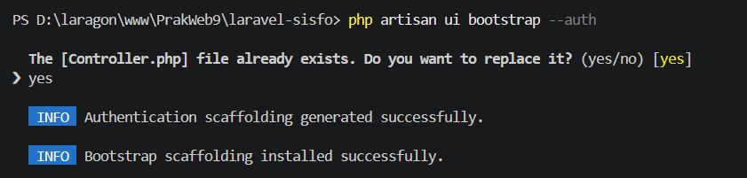
Proses instalasi dependensi frontend menggunakan npm installdannpm run build.Setelah project selesai, dilakukan konfigurasi database pada file
.env. Hal ini bertujuan agar aplikasi dapat terkoneksi ke database MySQL yang telah dibuat melalui interface (phpMyAdmin).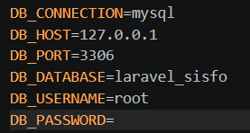
Konfigurasi koneksi database pada file .env.4.2 Implementasi Autentikasi
Untuk fitur login dan register, digunakan package
laravel/uidengan framework Bootstrap. Hal ini mempermudah proses scaffolding halaman autentikasi.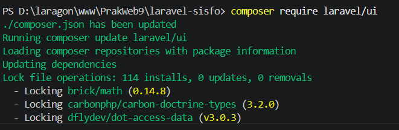
Instalasi package laravel/uidan scaffolding autentikasi Bootstrap menggunakanphp artisan ui bootstrap --auth.Setelah berhasil, silakan buka halaman login dan register. Jika berhasil maka akan menampilkan seperti berikut.
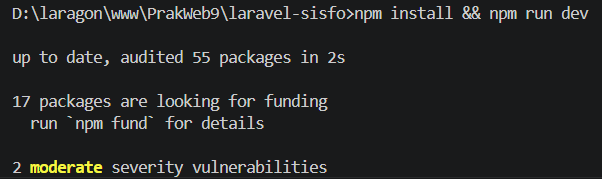
Halaman login yang dihasilkan oleh Laravel UI Bootstrap. 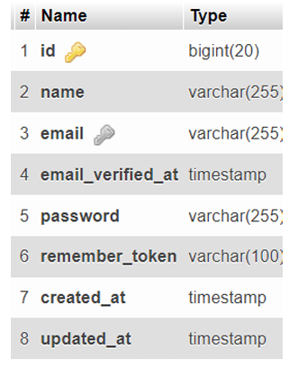
Halaman register yang dihasilkan oleh Laravel UI Bootstrap. 4.3 Kustomisasi Database dan Seeding
Dilakukan penambahan kolom pada tabel users untuk mengakomodasi kebutuhan sistem informasi sekolah. Penambahan kolom
username,level, dannamadilakukan melalui migration baru.a. Custom Table Users
Authentication Laravel secara otomatis akan menggunakan table Users yang berisi tentang informasi data user, berikut struktur table users. Dengan menggunakan perintah
php artisan make:migration create_table_users, maka ada pada tabel pada database dengan struktur berikut.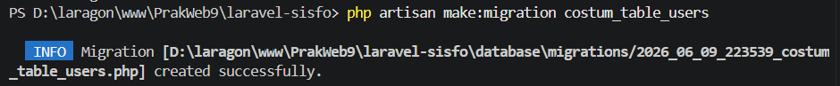
Struktur tabel userspada database.Selanjutnya buka folder migration yang sudah di buat dan tulis kode berikut.
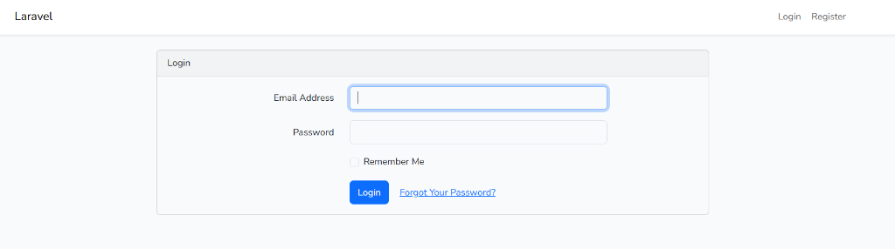
File migration untuk kustomisasi struktur tabel users.b. Seeder untuk Admin
Langkah selanjutnya setelah mengisikan tabel users adalah mengisi data pengguna melalui fitur seeding. Untuk menguji, buatlah seeder bernama
AdminSeeder, dengan menggunakan perintahphp artisan make:seeder AdminSeeder.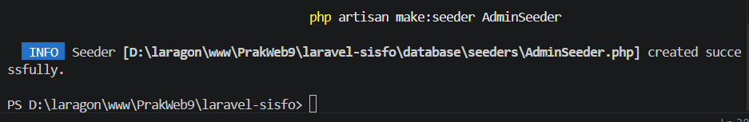
Perintah untuk membuat file AdminSeeder.Setelah perintah dijalankan, file
AdminSeeder.phppada folderdatabase/seeders. Selanjutnya, silakan akses file tersebut dan masukkan kode berikut untuk menambahkan data administrator.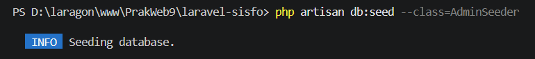
Kode AdminSeederberisi data awal untuk akun administrator.Selanjutnya untuk menjalankan seeding dengan cara menggunakan perintah berikut:
php artisan db:seed --class=AdminSeeder. Jika berhasil maka akan muncul seperti gambar berikut.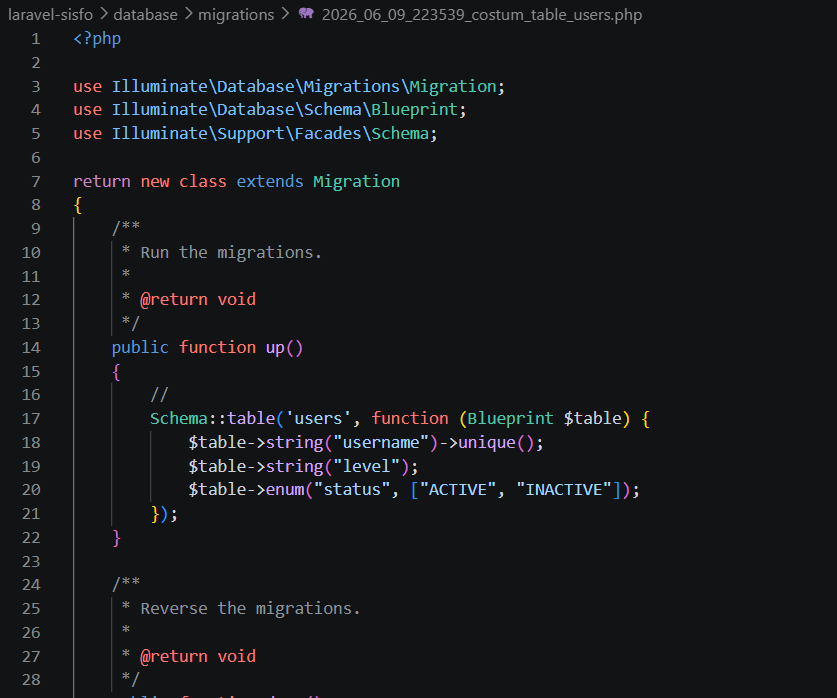
Perintah php artisan db:seed --class=AdminSeederberhasil dijalankan.4.4 Integrasi Template SB Admin 2
Setelah autentikasi Laravel berhasil diimplementasikan untuk menampilkan dashboard, langkah selanjutnya adalah melakukan kustomisasi template aplikasi agar sesuai dengan desain yang diinginkan. Pada studi kasus ini, kami menggunakan template SB Admin 2 berbasis framework Bootstrap. Proses pengimplementasian dilakukan dengan mengunduh template dari situs resmi, mengekstrak berkas tersebut, kemudian membuat direktori baru bernama
sb-admindi dalam folderpublicproject Laravel untuk menyimpan seluruh aset template tersebut.a. Halaman Login Aplikasi
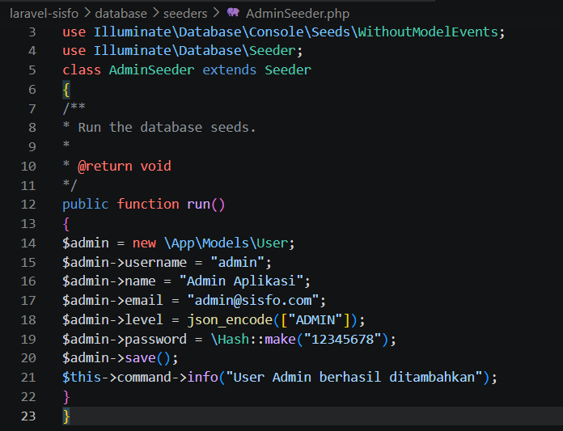
Kode blade untuk halaman login menggunakan template SB Admin 2. 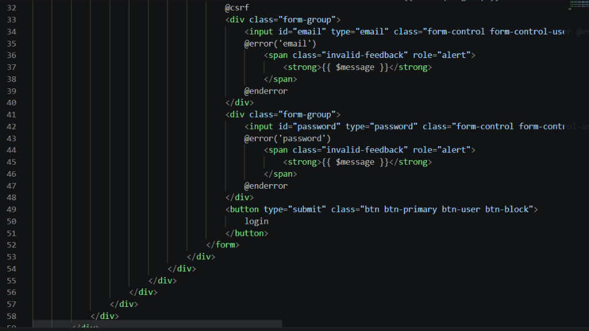
Kode lanjutan halaman login SB Admin 2. Maka output yang akan di hasilkan adalah sebagai berikut.
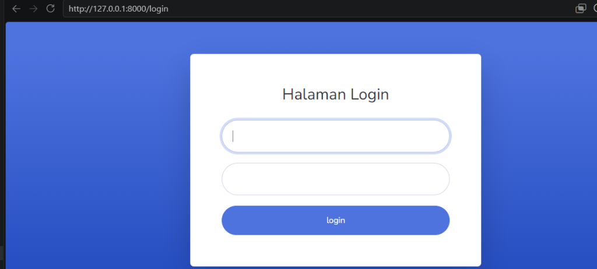
Hasil tampilan halaman login menggunakan template SB Admin 2. b. Layout Global
Tahap berikutnya adalah membuat layout global yang berfungsi sebagai kerangka utama bagi keseluruhan aplikasi. Mengingat file
app.blade.phpsudah digunakan untuk halaman autentikasi (login), maka diperlukan pembuatan layout alternatif. Oleh karena itu, dibuatlah filemain.blade.phpdi dalam direktoriviews/layoutssebagai layout utama yang akan digunakan oleh seluruh halaman yang membutuhkan tampilan dashboard. Kode program untuk layout global adalah sebagai berikut.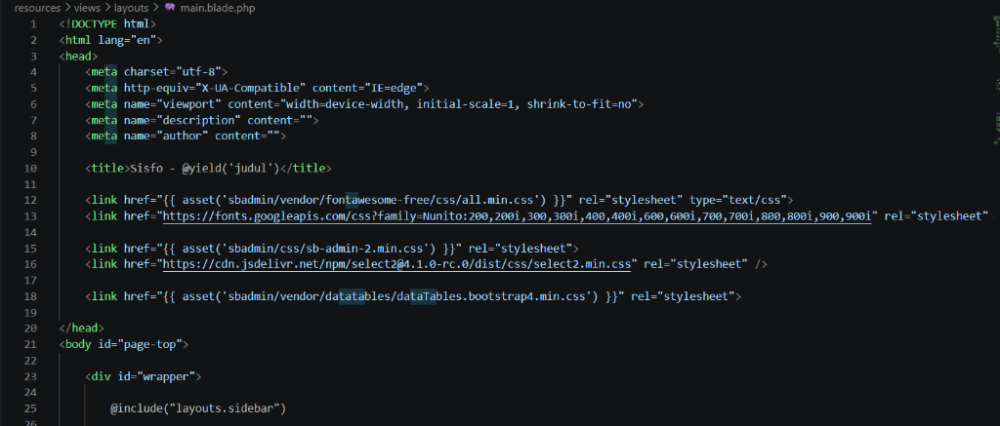
File main.blade.phpsebagai layout global aplikasi.c. Sidebar
Buat file pada folder layouts dengan nama
sidebar.blade.phpdengan kode program berikut.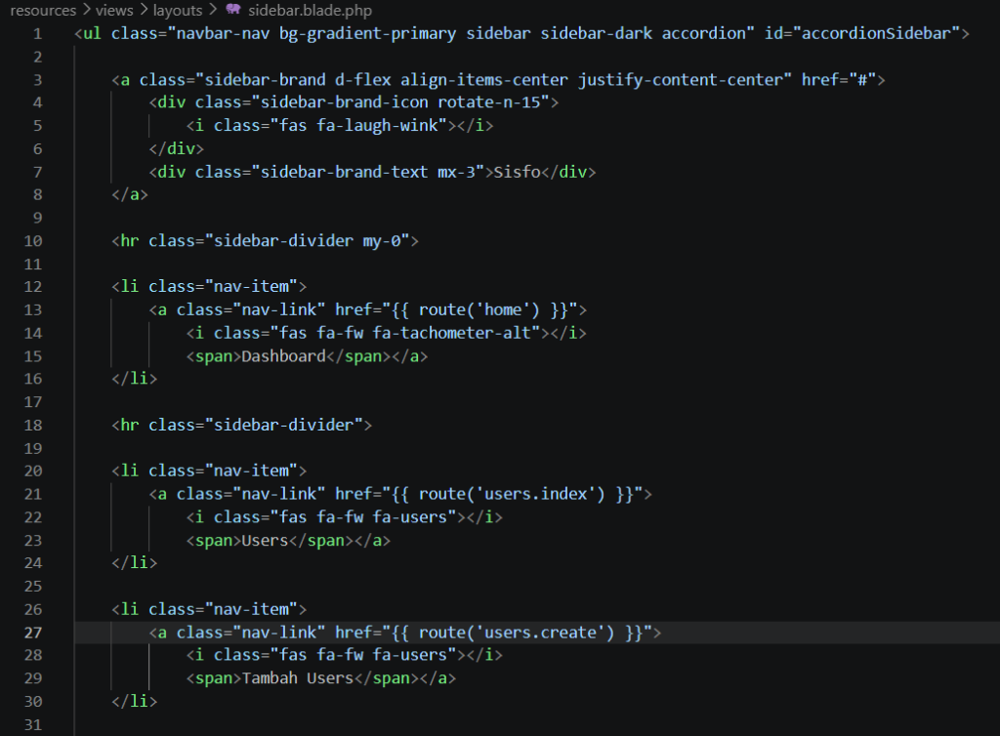
Kode sidebar.blade.phpbagian pertama.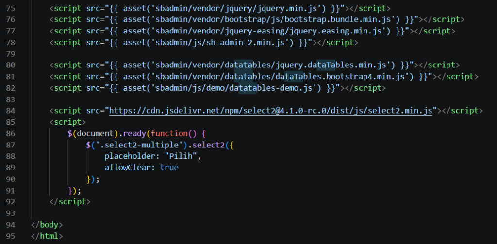
Kode sidebar.blade.phpbagian kedua.d. Topbar
Buat file pada folder layouts dengan nama
topbar.blade.phpdan isi dengan kode program berikut.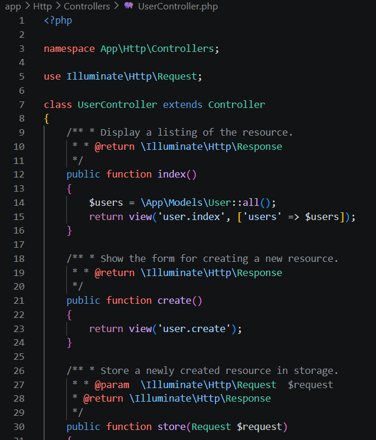
Kode topbar.blade.phpbagian pertama.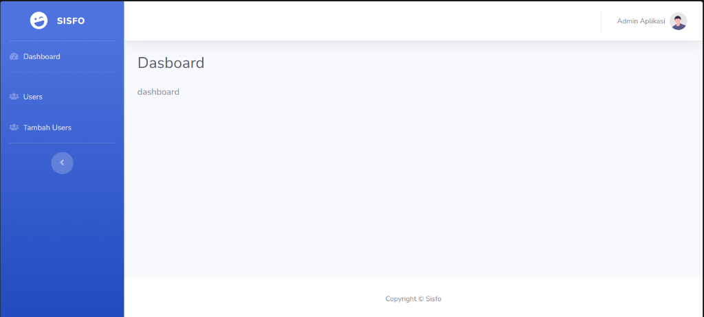
Kode topbar.blade.phpbagian kedua.e. Hasil Konfigurasi Template
Jika konfigurasi berhasil maka tampilan nya akan menjadi seperti berikut ini.
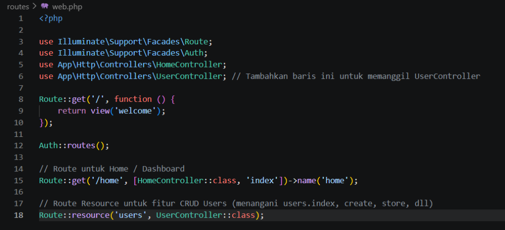
Hasil tampilan dashboard setelah integrasi template SB Admin 2 berhasil. 4.5 Manajemen Users
Tahap berikutnya adalah membangun fitur manajemen pengguna. Mengingat fitur ini menerapkan fungsi CRUD (Create, Read, Update, dan Delete) secara penuh, maka kita akan menggunakan Resource Controller. Langkah ini dilakukan melalui terminal dengan menjalankan perintah
php artisan make:controller UserController --resource.Selanjutnya ini kode program berikut pada route web.
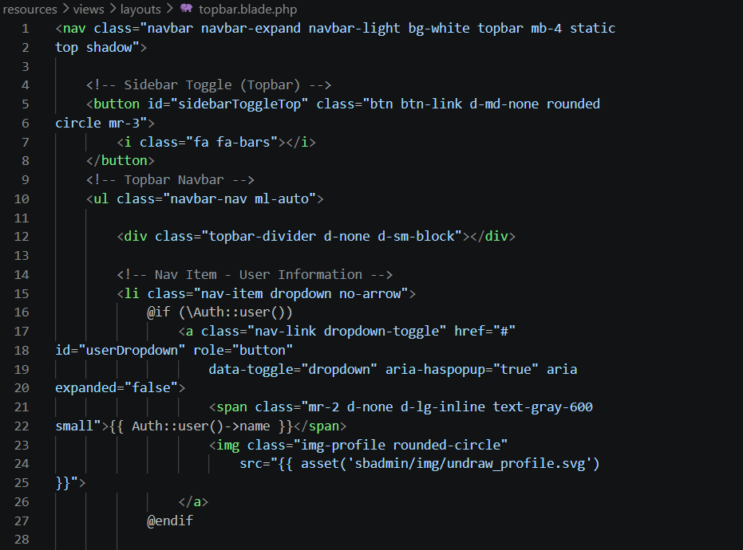
Penambahan route resource untuk UserControllerpada fileroutes/web.php.4.6 File UserController
Setelah rute sudah berhasil di buat, selanjutnya adalah isi file tersebut seperti pada gambar.
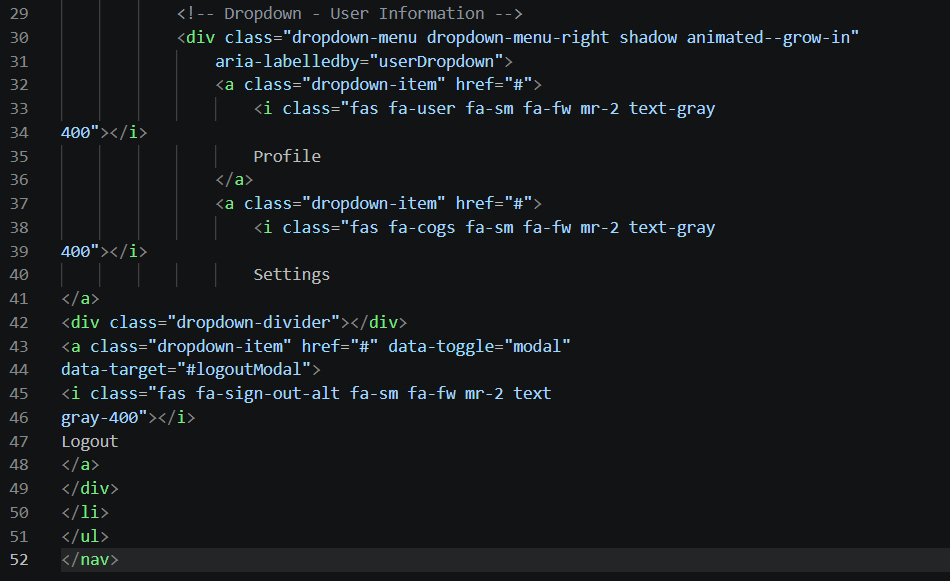
Kode UserControllerbagian pertama.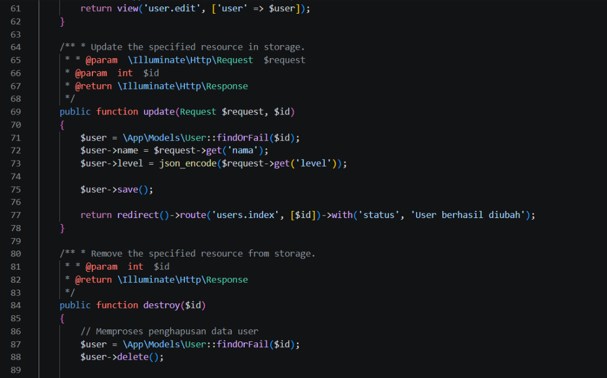
Kode UserControllerbagian kedua.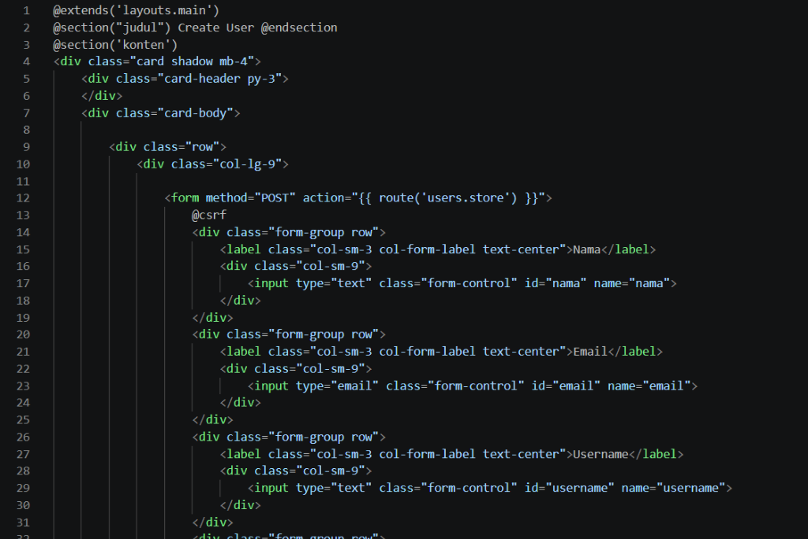
Kode UserControllerbagian ketiga.4.7 Create Users
Route untuk menampilkan view form tambah data user adalah
user/create. Silahkan buka fileUserControllerkemudian pada action create edit kode program menjadi seperti berikut.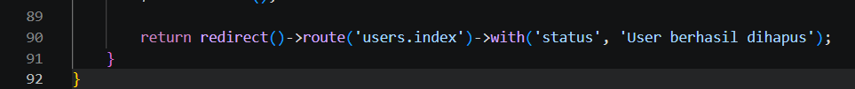
Kode file create.blade.phpbagian pertama.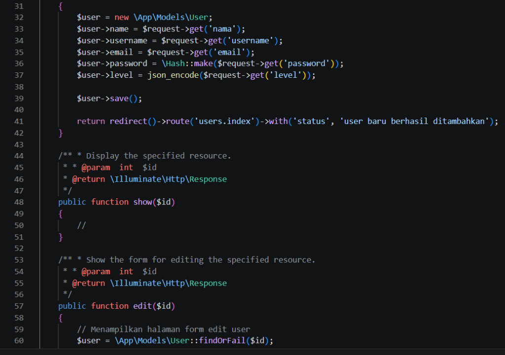
Kode file create.blade.phpbagian kedua.Jika sudah, silahkan di cek apakah hasilnya sudah sama dengan gambar berikut.
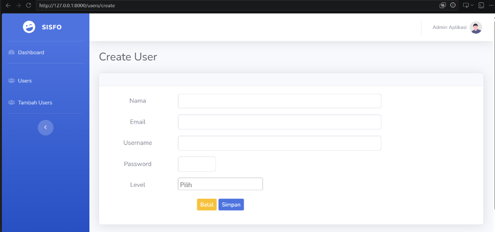
Hasil tampilan form create user pada browser. 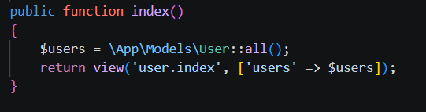
Tampilan form create user setelah integrasi template SB Admin 2. 4.8 Read / List Users
Selanjutnya setelah fungsi create selesai, kita akan menyimpan dan menampilkan data user. Untuk menampilkan data user kita akan menggunakan method
GETpada rutelocalhost/usersyang mana rute ini merupakan actionindexpadaUserController. Buka action index kemudian edit menjadi seperti kode program berikut.Selanjutnya buat file dengan nama
index.blade.phppada folderviews/userdan isi dengan kode program berikut.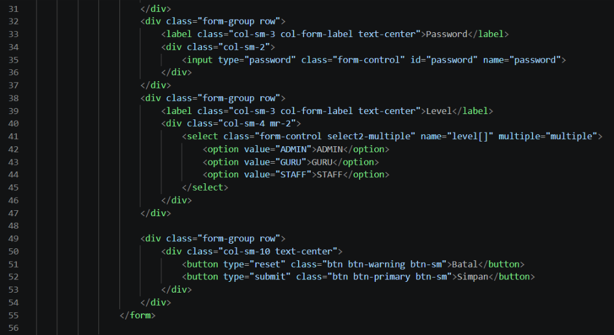
Kode file index.blade.phpuntuk menampilkan daftar user.Untuk mengecek apakah sudah berhasil, coba lakukan penginputan data seperti pada gambar.
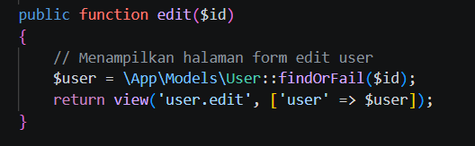
Hasil tampilan daftar user pada browser. Setelah di tambahkan kode ini maka tampilan list user akan menjadi seperti berikut.
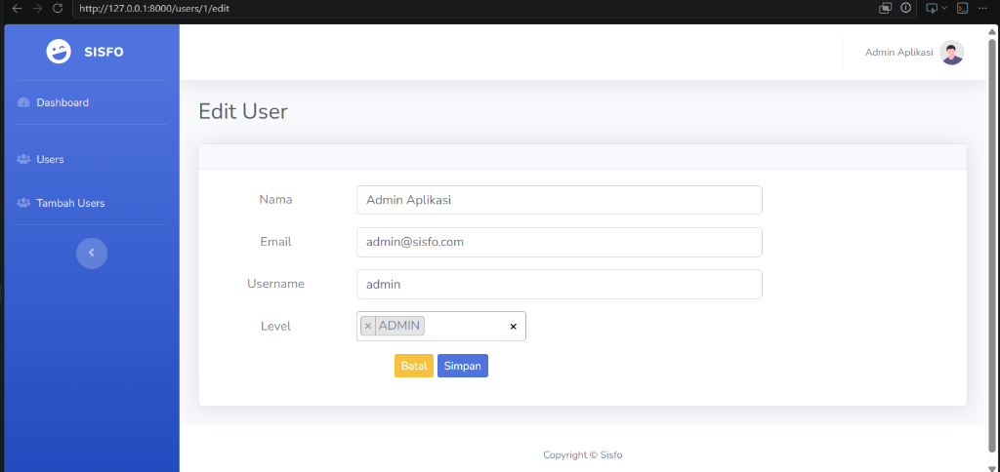
Tampilan akhir daftar user dengan fitur DataTables. 4.9 Update User
Tahap berikutnya dalam proses pengelolaan data pengguna adalah menyediakan antarmuka untuk mengedit data pengguna. Langkah ini dimulai dengan mengimplementasikan logika pada file
edit.blade.phpdi dalam direktoriviews/user, yang akan memanfaatkan methodeditpadaUserControllerserta menggunakan method HTTP PUT untuk proses pengiriman perubahan.Saat pengguna mengakses URL dengan format
users/{user}/edit, di mana{user}merepresentasikan ID unik dari data yang dipilih. Langkah berikut adalah mengimplementasikan logika perubahan data pada method edit di dalamUserController.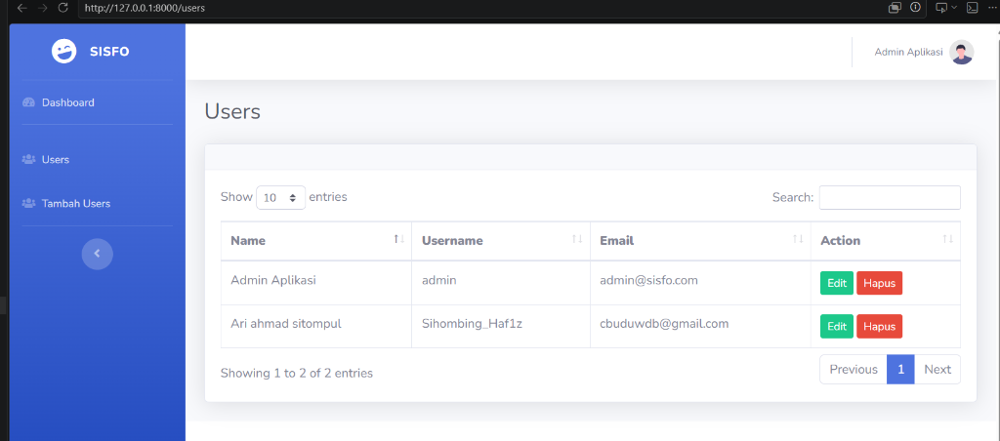
Kode file edit.blade.phpuntuk form update data user.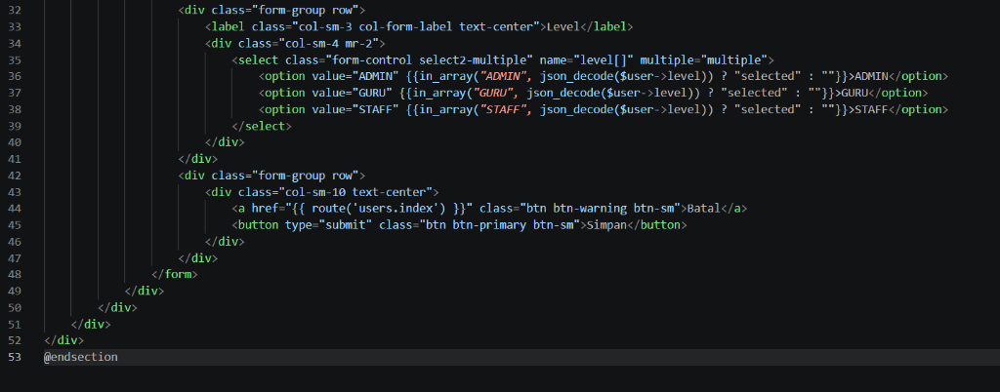
Kode lanjutan file edit.blade.php.Tampilan form jika sudah akan menjadi seperti ini.
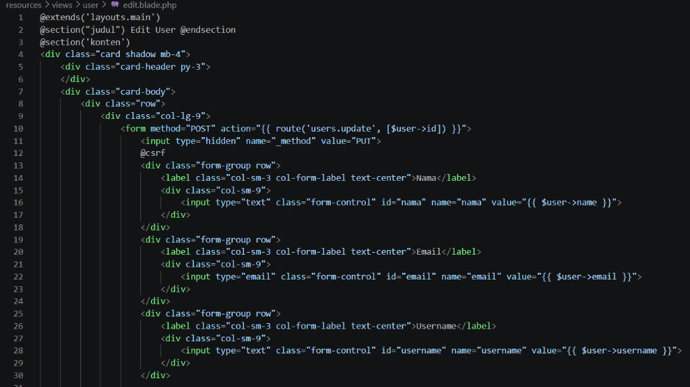
Hasil tampilan form edit user pada browser. 4.10 Delete Users
Tambahkan tombol atau link pada list user, silahkan buka view user
index.blade.phpdan tambahkan kode program berikut di bawah link edit.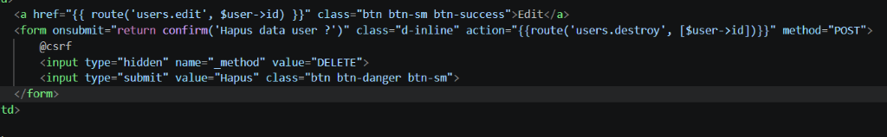
Penambahan tombol delete pada halaman daftar user. Untuk mengecek apakah sudah berhasil, coba lakukan penghapusan data seperti pada gambar.
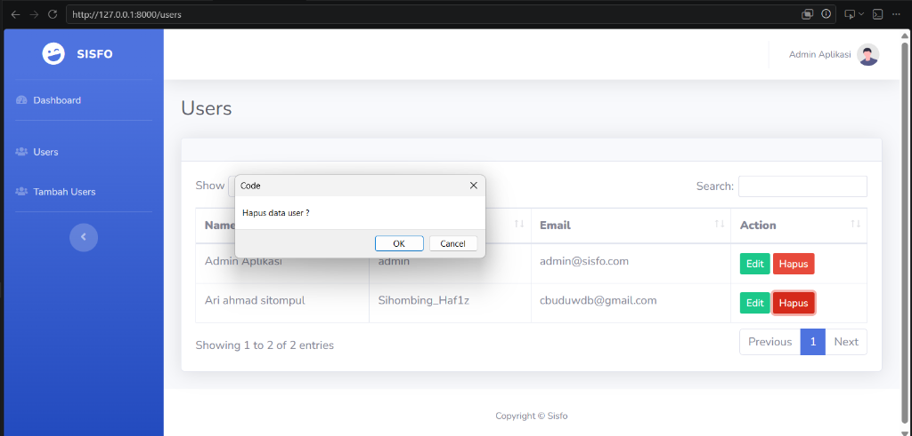
Proses penghapusan data user berhasil dilakukan. -
Kesimpulan
Berdasarkan pelaksanaan praktikum yang telah dilakukan, dapat disimpulkan bahwa Laravel merupakan framework PHP yang sangat efektif dalam membangun aplikasi web yang terstruktur, efisien, dan mudah dikelola melalui penerapan arsitektur MVC (Model-View-Controller). Penggunaan fitur migration menjadi sebuah praktik utama dalam pengelolaan basis data yang terstruktur, migration dan seeder membantu mempercepat proses pengembangan aplikasi. Dengan DataSeeder, data awal dapat disediakan dan dikelola secara efisien sebagai fondasi data pengguna.
Selain itu, integrasi template eksternal seperti SB Admin 2 berhasil memberikan antarmuka pengguna yang profesional dan responsif. Pendekatan konsep layouting modular dengan komponen sidebar dan topbar memungkinkan struktur kode yang lebih rapi dan mudah untuk dipelihara di masa depan. Praktik implementasi fitur CRUD (Create, Read, Update, Delete) menggunakan Resource Controller serta penambahan fitur DataTables memperlihatkan kemampuan pengelolaan data untuk pembangunan fungsi pengelolaan pengguna secara prosedural. Dengan demikian, praktikum ini memberikan mahasiswa pemahaman dan kemampuan dasar yang diperlukan untuk membangun sebuah aplikasi berbasis web yang terorganisir.
Repository Praktikum
Kode dan arsip project dapat dibuka melalui repository GitHub berikut.